Pic di Babe
NUOVO
Da Stavoli, per casera Fedeveiz e il viaz di collegamento alto fra casera Fedeveiz e lo stavolo Pustot
In una gita primaverile di qualche anno fa sul Monticello (Muéç), io Greta e Christian, arrivati al Balcon di Provezi, siamo rimasti colpiti dal versante Est del Cuel de la Ceit, costituito da belle e larghe cenge; ci eravamo ripromessi di farci visita, o perlomeno intanto di approcciare quei monti per farci un'idea di eventuali vie di discesa. Così ho pensato di salire intanto il Cuel da la Ruvîs, cosa adatta al periodo invernale data la quota bassa; per rendere la cosa un po' più interessante ho pensato di salire per Fedeveiz: la traccia così ben disegnata sulla Tabacco mi faceva ben sperare in un sentiero in buone condizioni... (e invece!)
La notte ha nevicato, e infatti il Cuel da la Ceit ha una leggera spolverata di neve (che poi già sarà sparita per ora di pranzo). Il Cuel da la Ruvîs è quel cocuzzolo boscoso sovrapposto al Cuel da la Ceit; quello più a dx è la q926 della cresta Sud-Est (pure percorribile).
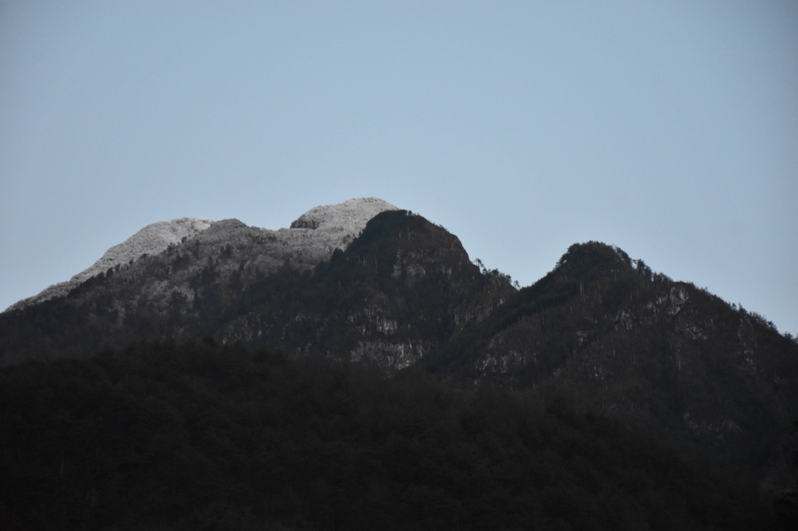Molto bella la vista sulle Crete di Palasecca: a sx del Sernio la cima Pale del Laris; si nota bene l'ampia forcje da l'Omp.
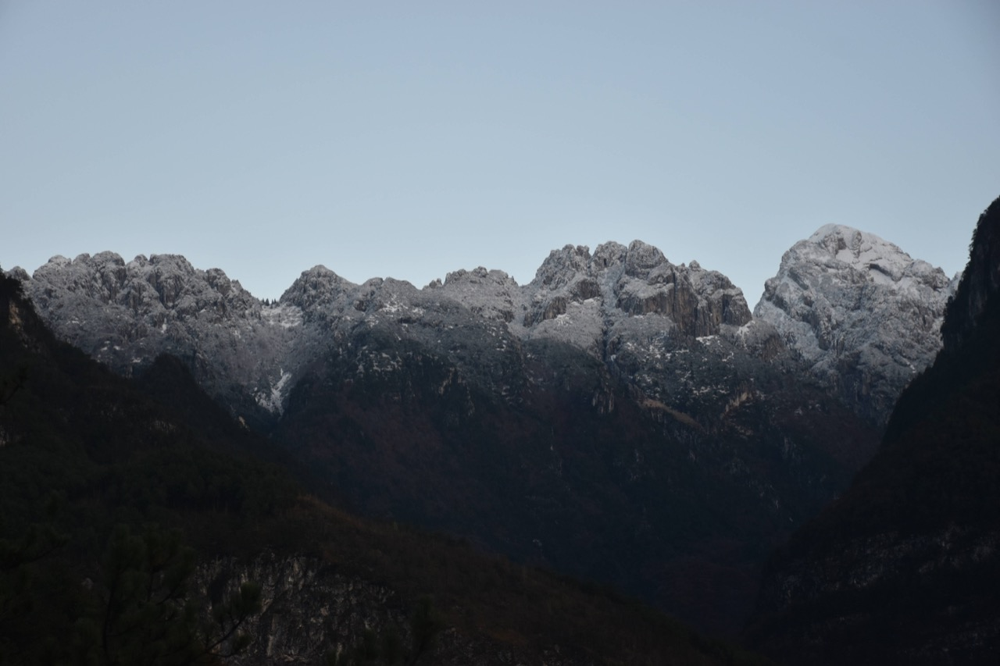Dal sentiero per Stavoli vediamo Moggessa di Là col costone Sud del Cimadôrs Basso, un tempo frequentato anche per salire in cima (cfr. Marinelli, Gaberscik) - e non avete idea di quante altre cose custodisca questo monte!
Il tratto basso del costone, culminante nel Cuel di Zòvet, fa parte del bosco bandito di Moggessa, l'unico in Italia a pino nero, con esemplari con più di 350 anni; da sempre esso ha svolto la funzione di pineta protettiva contro i massi che cadono dal Cimadôrs, e ancora oggi si possono trovare muretti a secco costruiti per stabilizzare macigni in precario equilibrio bloccati da questi esemplari di pino.
Ci stacchiamo dal sentiero CAI Stavoli-Illegio per salire verso Fedeveiz. Già dai primi metri capiamo com'è la situazione: solo vaghe tracce nel bosco, perlopiù sui crinali. Più saliamo e più ci rendiamo conto che del sentiero non resta praticamente nulla: solo in due punti abbiamo trovato una traccia che si può chiamare sentiero, cosa che mi ha convinto che il tracciato della Tabacco un tempo doveva essere esatto. Nella prima foto guardando con attenzione si notano le serpentine del sentiero, ottimamente tracciato. Comunque a scendere da qui a casaccio il rischio di perdersi è concreto, io ve lo dico.
Incredibile questo faggio che cresce praticamente sul roccione (notare la radice).
Ad ogni modo, demotivati e con parecchia fatica arriviamo ai ruderi di casera Fedeveiz, un luogo che sa di antico (si noti la dimensione del tronco a destra!). La radura è ora all'interno di un fitto boschetto di pini.
Devo ringraziare Kelen che mi ha fatto scoprire il libro Confessioni dal diario di un cacciatore di Gianni Chizzola: a pagina 59 c'è un capitoletto di poche pagine intitolato «Delusione in Fedeveiz», da cui si deduce che casera Fedeveiz deve essere abbandonata da almeno 80 anni.
Vi si legge:
«Eran tanti anni che chiedevo a Giordano di portarmi in Fedeveiz. Quel mitico luogo, sperduto, lassù alla bocca delle Nuviernulis; quel luogo selvaggio di cui avevo tanto sentito parlare in storie di caccia ai galli o ai camosci.
Sapevo che una volta in Fedeveiz c'era una grande malga, sperduta, fuori dal mondo, in cui salivano a monticare vacche del moggese e del tolmezzino.
Poi con il tempo che passava, una malga così lontana venne via via disattesa e infine abbandonata e in Fedeveiz salivano solo i cacciatori e poi sempre meno anche loro.
Per raggiungere Fedeveiz ci vogliono cinque buone ore da Moggio; bisogna salire i quattrocento gradoni che portano a Stavoli e quindi su ancora, per passaggi impervi, che scoraggiano chiunque.
La primavera del 1966 pareva finalmente la volta buona e la sera del 5 maggio, dopocena, lasciata la vettura a Campinolo sul piazzale della strada della S.A.D.E., ci incamminammo su per la strada di Stavoli.
...
A giorno, molto delusi, ci affacciamo sulle Nuviarnulis e quindi, scornati, torniamo giù, passando questa volta dal sentiero alto, attraverso una serie di ponticelli sospesi su orridi profondi che completano lo stato di disagio in cui ci troviamo. (NdR: ma quale sarebbe questo "sentiero alto con ponticelli" ?)
...
Ero salito in Fedeveiz, la conclamata capitale dei forcelli, sicuro di vivere una bellissima giornata di caccia. Ritorno ferocemente deluso: non sempre l'abbandono della montagna favorisce la fauna e la caccia.»
Torniamo a noi: ci abbiamo messo una vita ad arrivare alla casera Fedeveiz, per cui già capisco che il Cuel da la Ceit (quello innevato in foto) diventa un miraggio per oggi. Il sentiero di collegamento Fedeveiz-Pustot passa proprio nel punto in cui confluiscono quei canali; osservazioni da lontano e le curve di livello mi fanno supporre che il Cuel da la Ceit sia abbordabile per quella ripida pala centrale (forse c'è anche un passaggio che aggira a Sud-Est la q1424, che è il punto culminante di quel costolone a Sud della cima principale che rende complicato l'accesso al monte - che qui è quel cocuzzolo fra il Cuel da la Ceit e il punto più alto a dx).
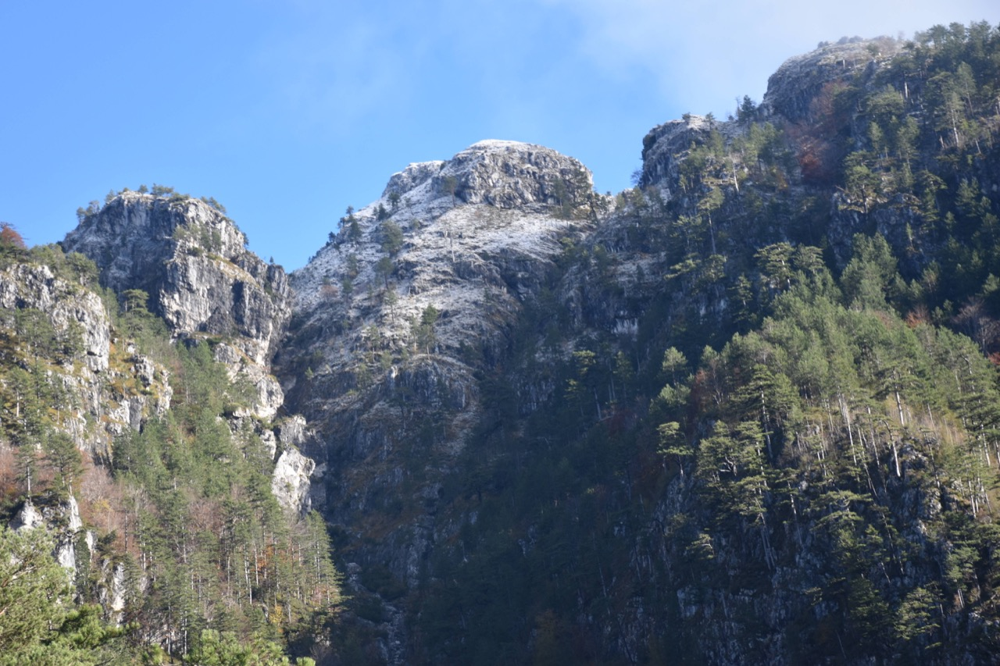Ad ogni modo iniziamo a traversare per andare in cerca della traccia che porta allo stavolo Pustot; mi fido poco della Tabacco che mostra la traccia scendere, per cui ci teniamo alti. Nessuno dei due lo dice però già da subito entrambi pensiamo che la cosa sia senza speranza, non ci sono punti di riferimento e non abbiamo nessuna notizia in merito... quando ad un certo punto, già pronti alla ritirata... un ometto!!! Rincuorati dal manufatto continuiamo, e con qualche intuizione azzeccata, ci approcciamo ad un rio, dove io intravedo sull'altro lato gli strapiompi con i clapusç, e Greta più in alto trova "la" traccia con ben di ometti. Chi la dura la vince!
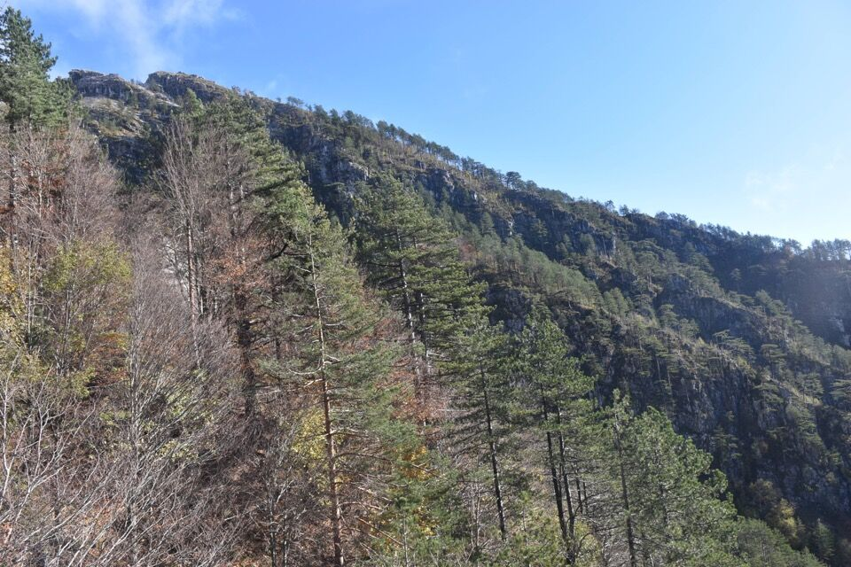 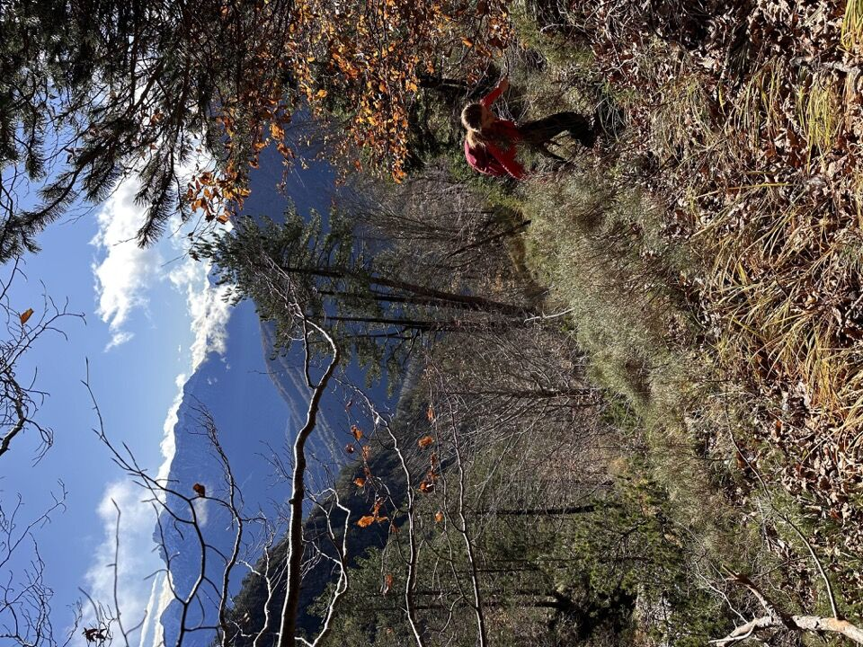L'insperato ometto.
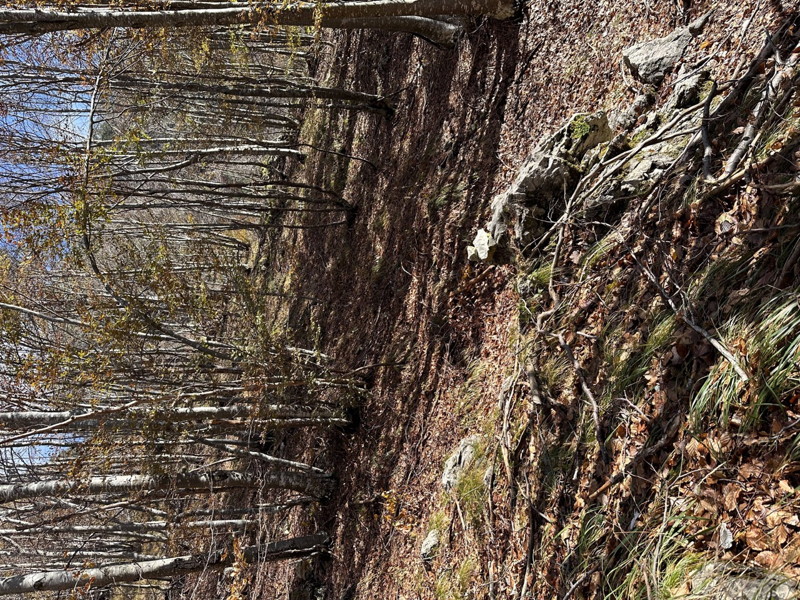I clapusç con resti di bivacchi dei partigiani.
 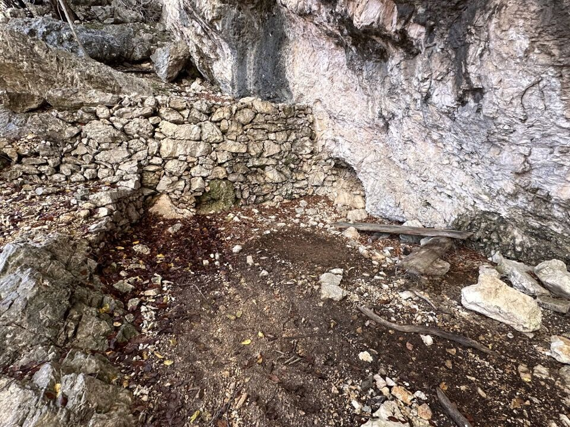
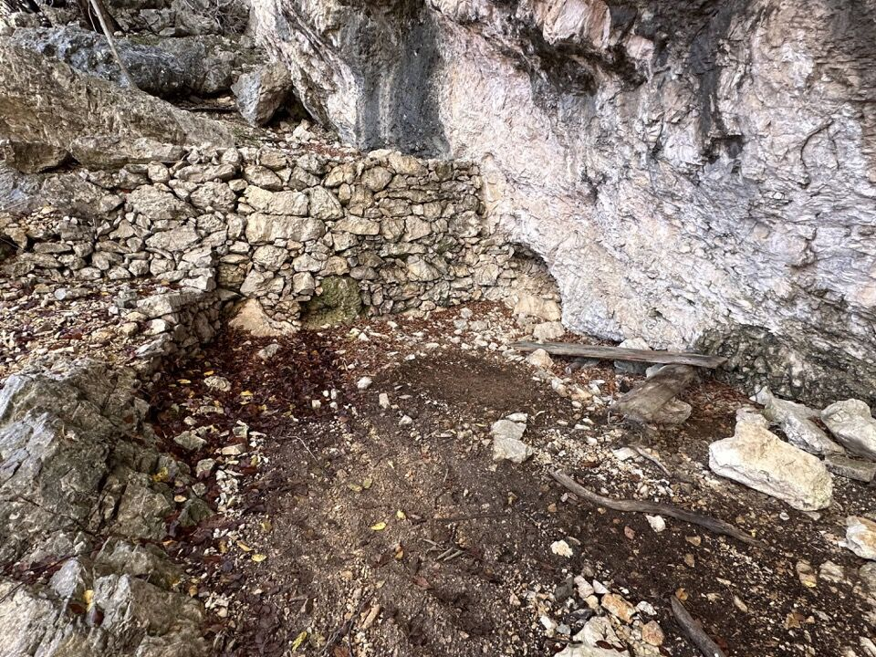
Ormai è fatta.
Uno sguardo indietro con l'Amariana innevata.

Il percorso è davvero bello, sfrutta i punti deboli del versante su tipico sentiero da animali.
Guardando indietro si vede bene la macchia di verdi dove si trovano i ruderi di casera Fedeveiz.
Quella cima mugosa sullo sfondo è il Cuel di Fedeveiz.
A pochi passi dalla cima del Cuel da la Ruvîs incontriamo un cacciatore che stava scendendo, assai sorpreso a vedere qualcuno lì, che ci chiede se ci siamo persi (sic). Ad ogni modo arriviamo sulla cimetta, che nonostante la quota ignobile regala un panorama davvero inusuale.
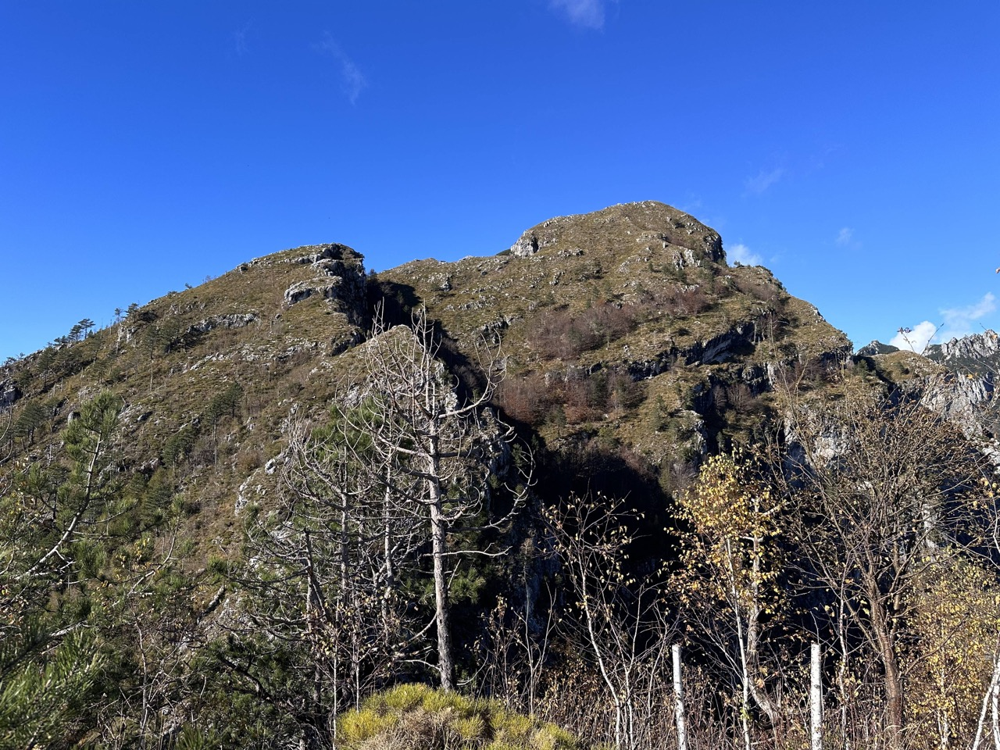Verso Grauzaria - Cimadôrs - Çuc dal Bôr.
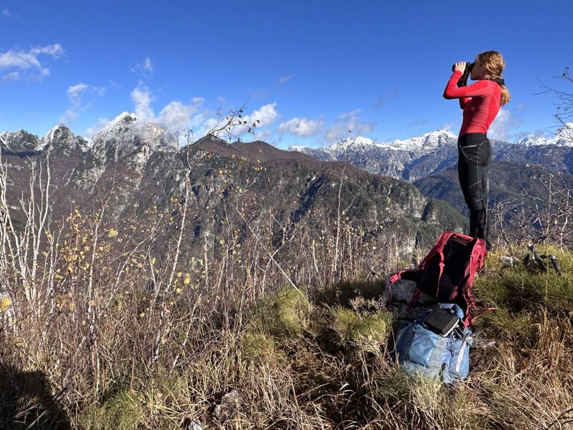Verso il Cuel da la Ceit: ci penseremo magari in primavera.
L'interessantissimo versante Ovest del Pisimoni: col tempo ho capito che c'è un mondo lì dentro.
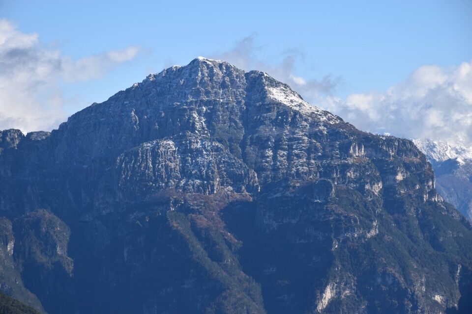La selvaggia e lunga val Nuviernulis in tutta la sua interezza; si nota, tutto a dx il rio de l'Omp a cui fa capo la forcje da l'Omp sulla cresta delle Crete di Palasecca, oltre alla radura dello stavolo delle Fratte.
Il versante Sud-Est della Creta Grauzaria.
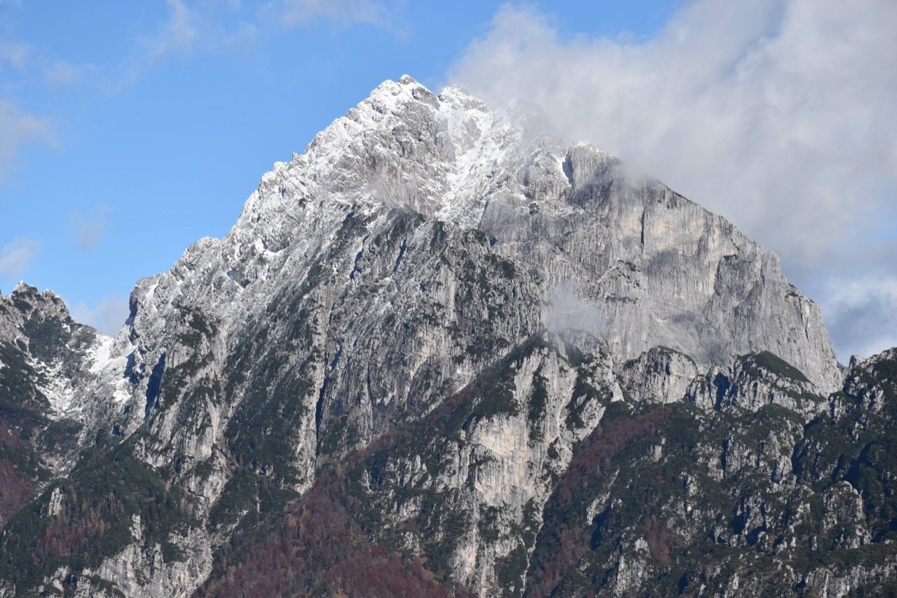Comunque già che ci sono do un occhio al versante Nord della forcella fra Cuel da la Ruvîs e Cuel da la Ceit, ma presto mi convinco che da lì non si va da nessuna parte (aggiunta successiva: non è proprio verissimo).
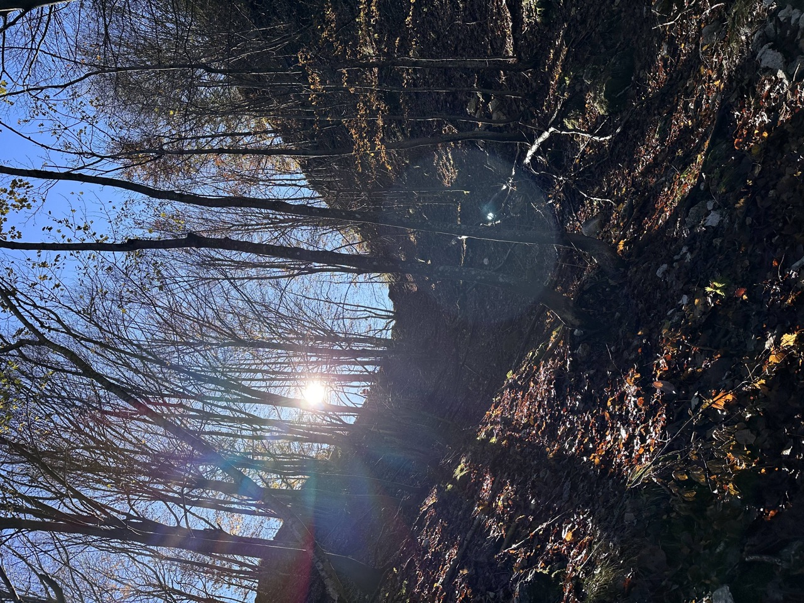Dalla cima in breve scendiamo allo stavolo Pustot.
Interno e dettaglio dello stavolo Pustot.
Dallo stavolo iniziamo a scendere, inizialmente sconsolati perché anche in questo pezzo manca la traccia (mica sarà tutto come per Fedeveiz?) ... ma ecco che dopo poco si arriva ad un terrificante quanto inestricabile boschetto pieno di vegetazione bassa, ecco fortunatamente appena ad Est di questo boschetto si trova la traccia, ben tagliata, che senza indugi porta fino a Stavoli. È molto importante trovare l'inizio della suddetta traccia, altrimenti poi non la si trova più e fino a Stavoli diventa un'impresa penosa.
Sullo sfondo la dorsale Àrghine-Lávara (innevato), in mezzo Punta Salvotis e Palòn dei Zábus, più in sotto la blanda dorsale della Punta Agarone, tutto a dx in alto Pale di Misdì. Notare la quasi perfetta somiglianza del Lávara e del Palòn dai Zábus.
Torniamo a Stavoli dove finalmente ci si può rilassare; passare per un luogo così bello è un davvero un punto a favore di questa escursione.
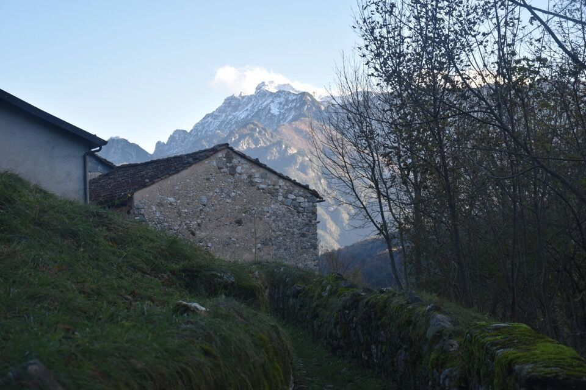